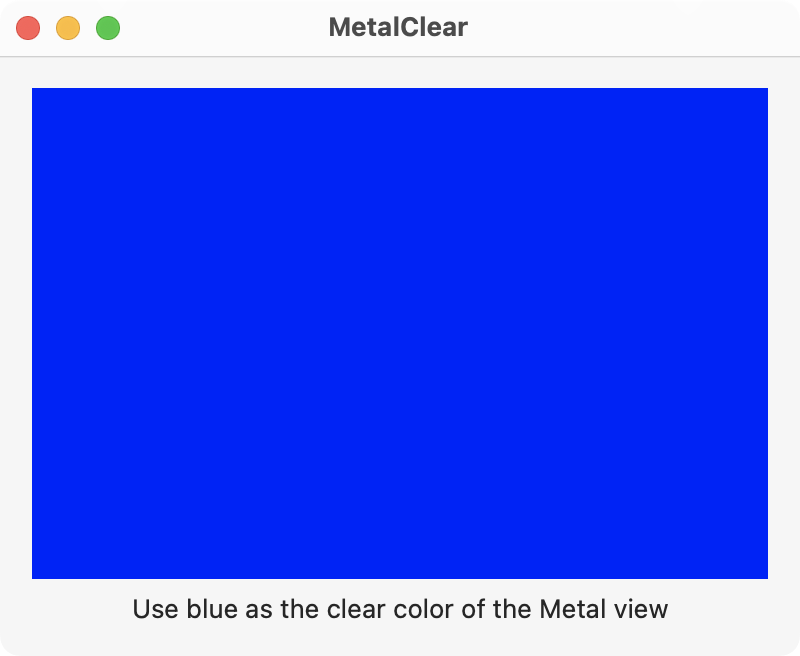

This example sets the clear color to blue for the Metal view. This color is like the background color of the view.

The main view is shown below and contains the MetalView where the clear color is drawn.
// ContentView.swift
import SwiftUI
import MetalKit
struct ContentView: View {
@State private var mtkView = MTKView()
@State private var renderer: Renderer?
var body: some View {
VStack {
MetalView(mtkView: mtkView)
.onAppear {
renderer = Renderer(metalView: mtkView)
}
Text("Use blue as the clear color of the Metal view")
}
.padding()
.frame(width: 400, height: 300)
}
}
The MetalView represents a MTKView as shown below. Notice the MTKView must be wrapped with a NSViewRepresentable for SwiftUI.
// MetalView.swift
import SwiftUI
import MetalKit
struct MetalView: NSViewRepresentable {
let mtkView: MTKView
func makeNSView(context: Context) -> some NSView {
return mtkView
}
func updateNSView(_ nsView: NSViewType, context: Context) { }
}
The Renderer object sets up the Metal device, pipeline, and buffers for drawing to the view. It sets the clear color to blue for the Metal view.
// Renderer.swift
import MetalKit
class Renderer: NSObject, MTKViewDelegate {
static var commandQueue: MTLCommandQueue!
init(metalView: MTKView) {
super.init()
// Setup command queue
guard let device = MTLCreateSystemDefaultDevice(),
let commandQueue = device.makeCommandQueue()
else {
fatalError("GPU not available")
}
Renderer.commandQueue = commandQueue
// Setup the Metal view and its clear color
metalView.device = device
metalView.clearColor = MTLClearColor(red: 0, green: 0, blue: 1, alpha: 1)
metalView.delegate = self
}
func mtkView(_ view: MTKView, drawableSizeWillChange size: CGSize) { }
func draw(in view: MTKView) {
// Get the view's drawable and descriptor
guard let drawable = view.currentDrawable,
let descriptor = view.currentRenderPassDescriptor
else { return }
// Make the command buffer and encoder
let commandBuffer = Renderer.commandQueue.makeCommandBuffer()
let commandEncoder = commandBuffer?.makeRenderCommandEncoder(descriptor: descriptor)
// End encoding, present the drawable view, and commit the buffer
commandEncoder?.endEncoding()
commandBuffer?.present(drawable)
commandBuffer?.commit()
}
}
All the code in this post is available on GitHub at swift-macos/xcode-projects/MetalClear.
Gavin Wiggins © 2025
Made on a Mac with Genja. Hosted on GitHub Pages.